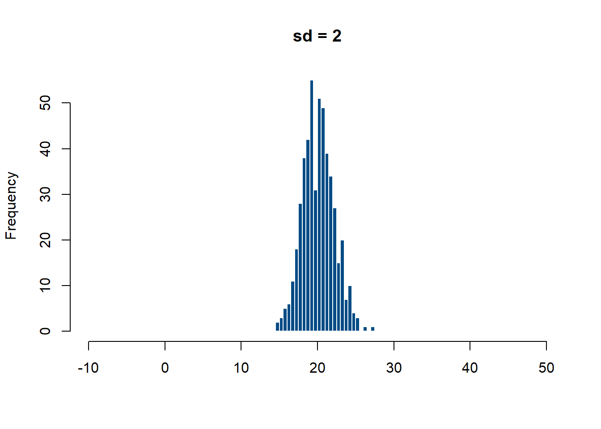
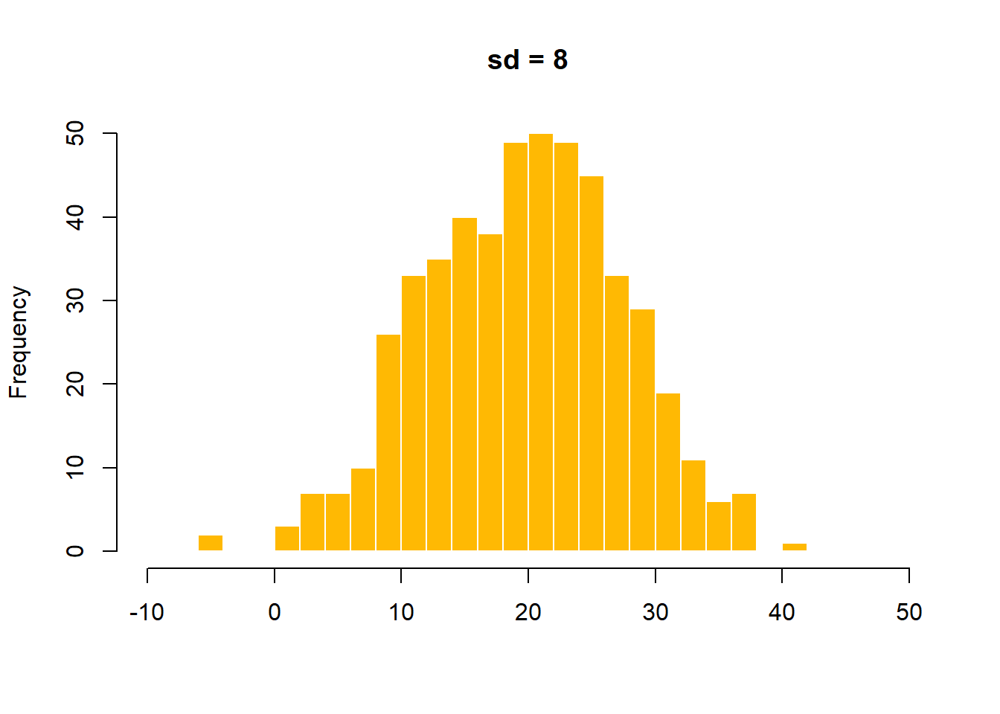

Code
playa_a <- c(66, 70, 75, 80, 85, 88, 90, 92, 95, 98, 100, 102, 105, 108, 110)
playa_b <- c(95, 96, 97, 98, 99, 100, 100, 101, 102, 103, 104, 105)
mean(playa_a)[1] 90.93333Code
mean(playa_b)[1] 100Dos playas donde anida la tortuga golfina tienen, en promedio, el mismo número de huevos por nido. ¿Significa eso que las dos playas son igual de “consistentes”?
Antes de seguir: si te dijeran que en la Playa A los nidos van de 60 a 110 huevos, y en la Playa B van de 95 a 105, ¿cuál playa dirías que es más “predecible”? ¿Cómo lo medirías con un número, no solo con la intuición?
[1] 90.93333[1] 100Corre el código. ¿Los promedios son parecidos? Ahora calcula range(playa_a) y range(playa_b) — ¿qué diferencia notas que el promedio no te estaba mostrando?
Si el promedio es prácticamente el mismo en ambas playas, ¿qué información nos falta para decir cuál es “más variable”?
set.seed(3)
grupo_concentrado <- rnorm(500, mean = 20, sd = 2)
grupo_disperso <- rnorm(500, mean = 20, sd = 8)
hist(grupo_concentrado, breaks = 20, col = "#004B85", border = "white",
main = "sd = 2", xlab = "", xlim = c(-10, 50))
hist(grupo_disperso, breaks = 20, col = "#FFB903", border = "white",
main = "sd = 8", xlab = "", xlim = c(-10, 50))

Ambos histogramas están centrados casi en el mismo lugar (20), pero uno es mucho más “ancho” que el otro. La media por sí sola no distingue estos dos casos — necesitamos una medida de dispersión.
La diferencia entre el valor máximo y el mínimo (Rincón, 2017):
\[r = x_{(n)} - x_{(1)}\]
Es la medida de dispersión más simple, pero solo usa dos valores del conjunto — el resto de los datos no aporta nada al cálculo. Es sensible a valores atípicos: un solo dato extremo puede inflar el rango sin que el resto de los datos sea realmente muy variable.
Mide la dispersión promediando el cuadrado de las distancias de cada dato a la media:
\[s^2 = \frac{1}{n}\sum_{i=1}^{n}(x_i - \bar{x})^2\]
¿Por qué al cuadrado? Porque la suma simple de las distancias a la media siempre da cero (las distancias positivas y negativas se cancelan) — elevar al cuadrado “rompe” ese balance. La consecuencia es que la varianza queda en unidades al cuadrado, lo que dificulta su interpretación directa.
La raíz cuadrada de la varianza — recupera las unidades originales de la variable:
\[s = \sqrt{s^2} = \sqrt{\frac{1}{n}\sum_{i=1}^{n}(x_i - \bar{x})^2}\]
Es la medida de dispersión más usada en la práctica, precisamente porque es interpretable en las mismas unidades que los datos.
El cociente entre la desviación estándar y la media:
\[cv(x) = \frac{s}{\bar{x}}\]
Al ser un cociente entre dos cantidades con las mismas unidades, el coeficiente de variación no tiene unidades — por eso permite comparar la dispersión relativa de variables medidas en escalas distintas (por ejemplo, pH vs. temperatura), algo que la desviación estándar sola no puede hacer.
Estas propiedades son el tipo de resultado que se espera poder demostrar, no solo aplicar — son la base para entender más adelante cómo se comportan la varianza y el rango cuando se estandarizan datos o se cambian unidades de medición.
Sea \(x_1, \dots, x_n\) un conjunto de datos, y considere los datos transformados \(y_i = a x_i + c\), con \(a, c\) constantes (\(a \geq 0\)).
Afirmación: trasladar los datos (\(y_i = x_i + c\)) no cambia el rango.
Demostración: el valor máximo trasladado es \(y_{(n)} = x_{(n)} + c\) y el mínimo es \(y_{(1)} = x_{(1)} + c\). Entonces: \[r_y = y_{(n)} - y_{(1)} = (x_{(n)} + c) - (x_{(1)} + c) = x_{(n)} - x_{(1)} = r_x\] \(\blacksquare\)
Afirmación: si los datos se multiplican por una constante \(a \geq 0\), el rango se multiplica por esa misma constante.
Demostración: como \(a \geq 0\), el máximo del nuevo conjunto es \(y_{(n)} = a\,x_{(n)}\) y el mínimo es \(y_{(1)} = a\,x_{(1)}\). Entonces: \[r_y = a\,x_{(n)} - a\,x_{(1)} = a\,(x_{(n)} - x_{(1)}) = a\,r_x\] \(\blacksquare\)
Pregunta abierta (Rincón, 2017): ¿qué cambia en este resultado si \(a < 0\)?
Puede demostrarse (usando que \(\bar{y} = a\bar{x} + c\)) que: \[s_y^2 = a^2 \, s_x^2 \qquad\qquad s_y = |a| \cdot s_x\]
La traslación (\(c\)) no afecta ni a la varianza ni a la desviación estándar — tiene sentido intuitivamente: mover todos los datos la misma cantidad no cambia qué tan dispersos están entre sí.
Como \(s_y = |a| \cdot s_x\) y \(\bar{y} = a\bar{x}\) (bajo un cambio de escala puro, sin traslación):
\[cv(y) = \frac{|a|}{a}\cdot\frac{s_x}{\bar{x}} = \begin{cases} cv(x) & \text{si } a > 0 \\ -cv(x) & \text{si } a < 0 \end{cases}\]
Es decir: bajo un cambio de escala, el CV puede cambiar de signo, pero nunca de magnitud. Bajo una traslación pura (\(y_i = x_i + c\)), en cambio, el CV sí cambia de magnitud, porque \(cv(y) = s_x / (\bar{x}+c)\) — otra razón por la que el CV no es apropiado en escalas de intervalo, donde el “cero” es arbitrario y se puede trasladar.
Estas propiedades explican, por ejemplo, por qué estandarizar una variable (\(z_i = (x_i - \bar{x})/s\)) siempre produce media 0 y varianza 1 — es una aplicación directa de la traslación por \(c=-\bar{x}\) y la escala por \(a = 1/s\). Este resultado será la base de la distribución normal estándar en el módulo de probabilidad.
El coeficiente de variación solo tiene sentido en variables de escala de razón (con cero absoluto real, como peso o tiempo). Nunca lo calcules para una variable de intervalo como la temperatura en °C — el resultado cambia según dónde pongas el cero de la escala, y deja de significar algo estable. Ver más trucos →
Paso 1 — Cargar los datos:
Paso 2 — Rango de SqFt y Price:
Paso 3 — Desviación estándar de cada una:
Paso 4 — Coeficiente de variación (para comparar dispersión relativa entre dos variables en unidades distintas — pies² vs. dólares):
[1] 10.57367[1] 20.60057El precio tiene una dispersión relativa notablemente mayor (CV≈20.6%) que el área (CV≈10.6%) — el precio de las casas varía, en proporción a su propia media, casi el doble que su tamaño. Tiene sentido: el precio depende de muchos factores además del área (barrio, acabados, número de ofertas recibidas), así que es natural que sea relativamente más disperso que una medida física directa como los pies cuadrados.
Si el coeficiente de variación del pH de un grupo de estanques es 18% y el de la temperatura es 25%, se concluye que los estanques son más similares entre sí en pH que en temperatura — aunque ambas variables se midan en escalas totalmente distintas. Es exactamente el mismo tipo de comparación que acabas de hacer entre área y precio.
Paso 5 — El mismo problema, con monedas distintas:
El CV es especialmente útil cuando ni siquiera las unidades coinciden — comparar salarios en dólares con salarios en pesos colombianos directamente no tiene sentido, pero comparar su variabilidad relativa sí:
CV_EEUU CV_Colombia
4.68 3.01 Aunque las cifras en pesos colombianos son miles de veces más grandes que en dólares, eso no dice nada sobre cuál grupo es relativamente más disperso — para eso está el CV. Aquí, el grupo de Colombia tiene menor variabilidad relativa (≈3.0%) que el de EE.UU. (≈4.7%), a pesar de que su desviación estándar en términos absolutos (256,000) parece “enorme” comparada con 165.65.
Con el dataset houses, comparando por Neighborhood:
Price para el barrio East y, por separado, para West.Price del dataset y recalcula el rango y la desviación estándar de Price. ¿Cuánto cambió cada uno?sd(x) — la desviación estándar dividida entre la media.
---
title: "Tema 5 · Medidas de dispersión"
---
::: {.hero-motivacion}
## 🐢 Dos playas, el mismo promedio de huevos por nido
Dos playas donde anida la tortuga golfina tienen, en promedio, el mismo número de huevos por nido. ¿Significa eso que las dos playas son igual de "consistentes"?
:::
::: {.ficha-prediccion}
Antes de seguir: si te dijeran que en la Playa A los nidos van de 60 a 110 huevos, y en la Playa B van de 95 a 105, ¿cuál playa dirías que es más "predecible"? ¿Cómo lo medirías con un número, no solo con la intuición?
:::
## 🔬 Exploremos: cuando el promedio no alcanza
```{r}
playa_a <- c(66, 70, 75, 80, 85, 88, 90, 92, 95, 98, 100, 102, 105, 108, 110)
playa_b <- c(95, 96, 97, 98, 99, 100, 100, 101, 102, 103, 104, 105)
mean(playa_a)
mean(playa_b)
```
::: {.ficha-resultado}
Corre el código. ¿Los promedios son parecidos? Ahora calcula `range(playa_a)` y `range(playa_b)` — ¿qué diferencia notas que el promedio no te estaba mostrando?
:::
::: {.callout-tip}
## Pregunta guía
Si el promedio es prácticamente el mismo en ambas playas, ¿qué información nos falta para decir cuál es "más variable"?
:::
## 🎛️ Simulación: misma media, distinta dispersión
```{r}
#| label: fig-misma-media-distinta-sd
#| fig-cap: "Dos distribuciones con la misma media pero distinta dispersión"
#| layout-ncol: 2
set.seed(3)
grupo_concentrado <- rnorm(500, mean = 20, sd = 2)
grupo_disperso <- rnorm(500, mean = 20, sd = 8)
hist(grupo_concentrado, breaks = 20, col = "#004B85", border = "white",
main = "sd = 2", xlab = "", xlim = c(-10, 50))
hist(grupo_disperso, breaks = 20, col = "#FFB903", border = "white",
main = "sd = 8", xlab = "", xlim = c(-10, 50))
```
::: {.callout-note}
## Lo que deberías notar
Ambos histogramas están centrados casi en el mismo lugar (20), pero uno es mucho más "ancho" que el otro. La media por sí sola no distingue estos dos casos — necesitamos una medida de dispersión.
:::
## 💡 Discusión
- ¿Por qué el rango (máximo − mínimo) podría ser una medida de dispersión poco confiable si tuvieras un solo dato raro en el conjunto?
- Si dos variables se miden en unidades distintas (por ejemplo, pH y temperatura), ¿cómo compararías cuál es "más variable" en términos relativos?
## 📖 Ahora sí, la teoría
::: {.panel-tabset}
## Rango
La diferencia entre el valor máximo y el mínimo (Rincón, 2017):
$$r = x_{(n)} - x_{(1)}$$
Es la medida de dispersión más simple, pero **solo usa dos valores** del conjunto — el resto de los datos no aporta nada al cálculo. Es sensible a valores atípicos: un solo dato extremo puede inflar el rango sin que el resto de los datos sea realmente muy variable.
## Varianza
Mide la dispersión promediando el cuadrado de las distancias de cada dato a la media:
$$s^2 = \frac{1}{n}\sum_{i=1}^{n}(x_i - \bar{x})^2$$
¿Por qué al cuadrado? Porque la suma simple de las distancias a la media siempre da cero (las distancias positivas y negativas se cancelan) — elevar al cuadrado "rompe" ese balance. La consecuencia es que la varianza queda en **unidades al cuadrado**, lo que dificulta su interpretación directa.
## Desviación estándar
La raíz cuadrada de la varianza — recupera las unidades originales de la variable:
$$s = \sqrt{s^2} = \sqrt{\frac{1}{n}\sum_{i=1}^{n}(x_i - \bar{x})^2}$$
Es la medida de dispersión más usada en la práctica, precisamente porque es interpretable en las mismas unidades que los datos.
## Coeficiente de variación
El cociente entre la desviación estándar y la media:
$$cv(x) = \frac{s}{\bar{x}}$$
Al ser un cociente entre dos cantidades con las mismas unidades, el coeficiente de variación **no tiene unidades** — por eso permite comparar la dispersión relativa de variables medidas en escalas distintas (por ejemplo, pH vs. temperatura), algo que la desviación estándar sola no puede hacer.
:::
### Propiedades formales bajo transformaciones lineales
Estas propiedades son el tipo de resultado que se espera poder **demostrar**, no solo aplicar — son la base para entender más adelante cómo se comportan la varianza y el rango cuando se estandarizan datos o se cambian unidades de medición.
Sea $x_1, \dots, x_n$ un conjunto de datos, y considere los datos transformados $y_i = a x_i + c$, con $a, c$ constantes ($a \geq 0$).
::: {.panel-tabset}
## Rango bajo traslación
**Afirmación:** trasladar los datos ($y_i = x_i + c$) no cambia el rango.
**Demostración:** el valor máximo trasladado es $y_{(n)} = x_{(n)} + c$ y el mínimo es $y_{(1)} = x_{(1)} + c$. Entonces:
$$r_y = y_{(n)} - y_{(1)} = (x_{(n)} + c) - (x_{(1)} + c) = x_{(n)} - x_{(1)} = r_x$$
$\blacksquare$
## Rango bajo escala
**Afirmación:** si los datos se multiplican por una constante $a \geq 0$, el rango se multiplica por esa misma constante.
**Demostración:** como $a \geq 0$, el máximo del nuevo conjunto es $y_{(n)} = a\,x_{(n)}$ y el mínimo es $y_{(1)} = a\,x_{(1)}$. Entonces:
$$r_y = a\,x_{(n)} - a\,x_{(1)} = a\,(x_{(n)} - x_{(1)}) = a\,r_x$$
$\blacksquare$
**Pregunta abierta (Rincón, 2017):** ¿qué cambia en este resultado si $a < 0$?
## Varianza y desviación estándar
Puede demostrarse (usando que $\bar{y} = a\bar{x} + c$) que:
$$s_y^2 = a^2 \, s_x^2 \qquad\qquad s_y = |a| \cdot s_x$$
La traslación ($c$) no afecta ni a la varianza ni a la desviación estándar — tiene sentido intuitivamente: mover todos los datos la misma cantidad no cambia qué tan dispersos están entre sí.
## Coeficiente de variación
Como $s_y = |a| \cdot s_x$ y $\bar{y} = a\bar{x}$ (bajo un cambio de escala puro, sin traslación):
$$cv(y) = \frac{|a|}{a}\cdot\frac{s_x}{\bar{x}} = \begin{cases} cv(x) & \text{si } a > 0 \\ -cv(x) & \text{si } a < 0 \end{cases}$$
Es decir: bajo un cambio de escala, el CV puede cambiar de **signo**, pero nunca de **magnitud**. Bajo una traslación pura ($y_i = x_i + c$), en cambio, el CV sí cambia de magnitud, porque $cv(y) = s_x / (\bar{x}+c)$ — otra razón por la que el CV no es apropiado en escalas de intervalo, donde el "cero" es arbitrario y se puede trasladar.
:::
::: {.callout-note}
## Por qué esto importa en la práctica
Estas propiedades explican, por ejemplo, por qué **estandarizar** una variable ($z_i = (x_i - \bar{x})/s$) siempre produce media 0 y varianza 1 — es una aplicación directa de la traslación por $c=-\bar{x}$ y la escala por $a = 1/s$. Este resultado será la base de la distribución normal estándar en el módulo de probabilidad.
:::
::: {.callout-tip}
## 💡 Truco de interpretación
El coeficiente de variación solo tiene sentido en variables de **escala de razón** (con cero absoluto real, como peso o tiempo). Nunca lo calcules para una variable de intervalo como la temperatura en °C — el resultado cambia según dónde pongas el cero de la escala, y deja de significar algo estable. [Ver más trucos →](../recursos.qmd)
:::
## 🧪 Ejemplo con datos reales
**Paso 1 — Cargar los datos:**
```{r}
houses <- read.csv("../data/house-prices.csv")
```
**Paso 2 — Rango de `SqFt` y `Price`:**
```{r}
range(houses$SqFt)
range(houses$Price)
```
**Paso 3 — Desviación estándar de cada una:**
```{r}
sd(houses$SqFt)
sd(houses$Price)
```
**Paso 4 — Coeficiente de variación (para comparar dispersión relativa entre dos variables en unidades distintas — pies² vs. dólares):**
```{r}
sd(houses$SqFt) / mean(houses$SqFt) * 100 # CV del área
sd(houses$Price) / mean(houses$Price) * 100 # CV del precio
```
::: {.ficha-resultado}
El precio tiene una dispersión relativa notablemente mayor (CV≈20.6%) que el área (CV≈10.6%) — el precio de las casas varía, en proporción a su propia media, casi el doble que su tamaño. Tiene sentido: el precio depende de muchos factores además del área (barrio, acabados, número de ofertas recibidas), así que es natural que sea relativamente más disperso que una medida física directa como los pies cuadrados.
:::
::: {.callout-important}
## Comparando pH y temperatura (ejemplo de Contento Rubio)
Si el coeficiente de variación del pH de un grupo de estanques es 18% y el de la temperatura es 25%, se concluye que los estanques son más similares entre sí en pH que en temperatura — aunque ambas variables se midan en escalas totalmente distintas. Es exactamente el mismo tipo de comparación que acabas de hacer entre área y precio.
:::
**Paso 5 — El mismo problema, con monedas distintas:**
El CV es especialmente útil cuando ni siquiera las *unidades* coinciden — comparar salarios en dólares con salarios en pesos colombianos directamente no tiene sentido, pero comparar su variabilidad relativa sí:
```{r}
media_eeuu <- 3540; sd_eeuu <- 165.65 # USD
media_col <- 8500000; sd_col <- 256000 # COP
cv_eeuu <- sd_eeuu / media_eeuu * 100
cv_col <- sd_col / media_col * 100
c(CV_EEUU = round(cv_eeuu, 2), CV_Colombia = round(cv_col, 2))
```
::: {.ficha-resultado}
Aunque las cifras en pesos colombianos son miles de veces más grandes que en dólares, eso no dice nada sobre cuál grupo es *relativamente* más disperso — para eso está el CV. Aquí, el grupo de Colombia tiene menor variabilidad relativa (≈3.0%) que el de EE.UU. (≈4.7%), a pesar de que su desviación estándar en términos absolutos (256,000) parece "enorme" comparada con 165.65.
:::
## 🧑🔬 Laboratorio
Con el dataset `houses`, comparando por `Neighborhood`:
1. Calcula rango, varianza, desviación estándar y coeficiente de variación de `Price` para el barrio East y, por separado, para West.
2. ¿Cuál de los dos barrios es relativamente más disperso en precio, según el coeficiente de variación? (No te dejes engañar por cuál grupo tiene mayor desviación estándar en términos absolutos.)
3. Elimina la casa con mayor `Price` del dataset y recalcula el rango y la desviación estándar de `Price`. ¿Cuánto cambió cada uno?
## ✅ Ejercicios autocorregibles
### Ejercicio 1 — Completa el código
```r
# Coeficiente de variación: completa la función correcta
___(x) / mean(x)
```
<details>
<summary>Ver respuesta</summary>
`sd(x)` — la desviación estándar dividida entre la media.
</details>
### Ejercicio 2 — Verdadero o falso
<div class="card-lab" id="quiz-tema5">
<div style="margin-bottom: 1rem;"><strong>1. El rango usa toda la información del conjunto de datos.</strong><br>
<label><input type="radio" name="q1" value="V"> Verdadero</label> <label style="margin-left: 1rem;"><input type="radio" name="q1" value="F"> Falso</label></div>
<div style="margin-bottom: 1rem;"><strong>2. El coeficiente de variación no tiene unidades.</strong><br>
<label><input type="radio" name="q2" value="V"> Verdadero</label> <label style="margin-left: 1rem;"><input type="radio" name="q2" value="F"> Falso</label></div>
<div style="margin-bottom: 1rem;"><strong>3. La varianza se expresa en las mismas unidades que los datos originales.</strong><br>
<label><input type="radio" name="q3" value="V"> Verdadero</label> <label style="margin-left: 1rem;"><input type="radio" name="q3" value="F"> Falso</label></div>
<button class="btn-outline-prediccion" style="padding: 0.5rem 1rem; border-radius: 4px; cursor: pointer;" onclick="revisarQuizTema5()">Revisar respuestas</button>
<p id="resultado-quiz-tema5" style="margin-top: 1rem; font-weight: 700;"></p>
</div>
<script>
function revisarQuizTema5() {
const respuestas = { q1: "F", q2: "V", q3: "F" };
// Exigir que todas las preguntas estén respondidas antes de revelar el resultado
const sinResponder = Object.keys(respuestas).filter(
p => !document.querySelector(`input[name="${p}"]:checked`)
);
const resultadoEl = document.getElementById("resultado-quiz-tema5");
if (sinResponder.length > 0) {
resultadoEl.textContent = "Responde todas las preguntas antes de revisar.";
resultadoEl.style.color = "#B37D00";
return;
}
let correctas = 0;
for (const [p, c] of Object.entries(respuestas)) {
const s = document.querySelector(`input[name="${p}"]:checked`);
if (s && s.value === c) correctas++;
}
const r = document.getElementById("resultado-quiz-tema5");
r.textContent = `Obtuviste ${correctas} de ${Object.keys(respuestas).length} correctas.`;
r.style.color = correctas === Object.keys(respuestas).length ? "#004B85" : "#B37D00";
}
</script>
## 🗂️ Resumen
::: {.card-lab}
- El rango es simple pero frágil: solo usa dos datos y es muy sensible a valores atípicos.
- La varianza usa todos los datos pero queda en unidades al cuadrado; la desviación estándar corrige eso.
- El coeficiente de variación, al no tener unidades, es la única de estas medidas que permite comparar la dispersión relativa entre variables medidas en escalas distintas.
:::